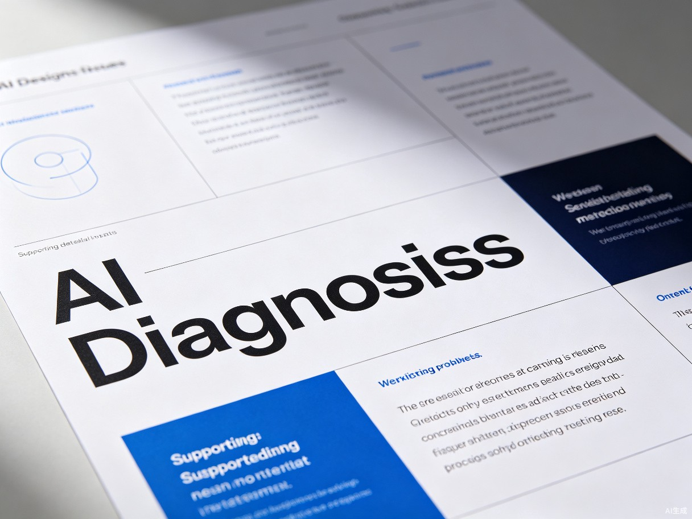

美商
立即诊断
审美训练
知识库
即将上线
素材库
即将上线
返回

设计诊断报告
0
分
中等水平
查看画像
重新诊断
概览
问题
建议
迭代
维度明细
对比
4/5
对齐
3/5
重复
2/5
亲密
4/5
配色
3/5
字体
5/5
问题概览
高 · 对比不足
标题与正文大小对比仅 1.2 倍
展开
中 · 对齐混乱
多个元素未对齐到统一轴线
展开
低 · 留白过多
底部留白超过视觉舒适范围
展开